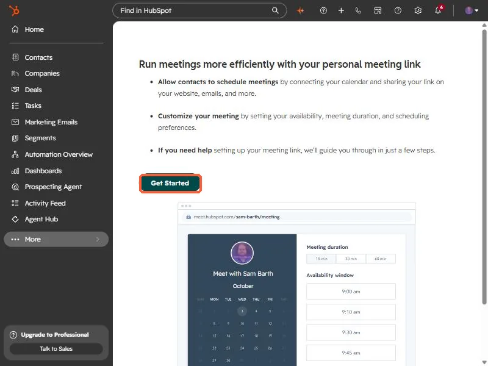
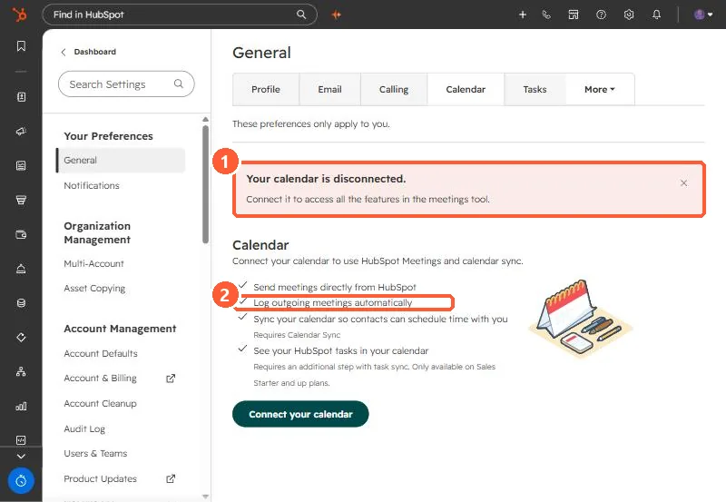
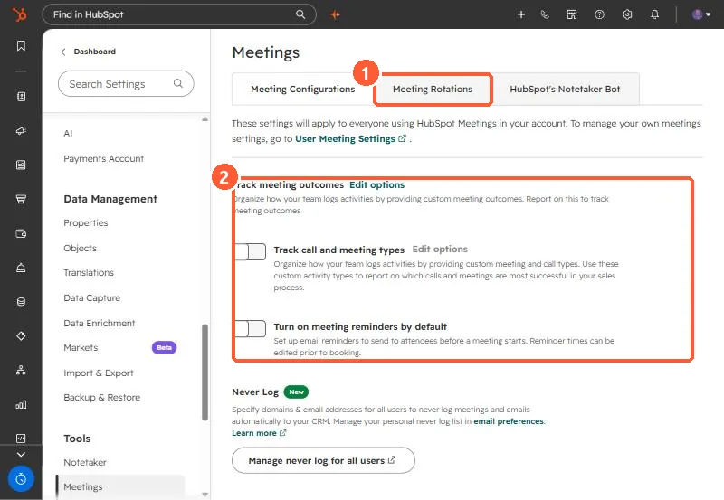
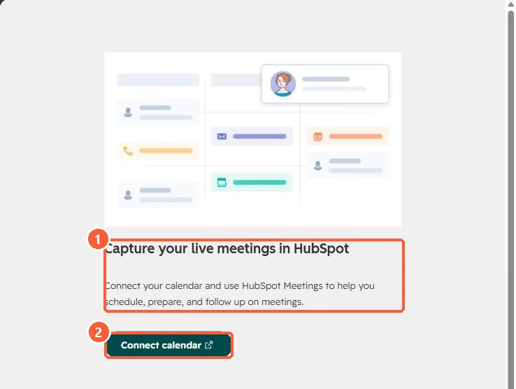

Short answer
Connect your calendar first, then create a scheduling page in the meetings tool, set title, location, duration and availability, and share the link. Video links come from the Teams, Zoom, UberConference or Google Meet integrations; Google Meet is installed per user. Team pages are group (everyone attends) or round robin (one person takes it). A meeting rotation shows only the next person's availability, and a member with a disconnected calendar is treated as always available, so check connections and remove people who leave or they keep getting booked.
1. Connect your calendar, then build the page
The first time you open the meetings tool, HubSpot shows an introduction with Get Started:


- Connect your calendar. Available times come from it, and a Gmail or Microsoft 365 calendar syncs both ways so bookings land on it. Sync uses each user's primary calendar.
- Create a scheduling page: one-on-one for yourself, or a team page.
- Set the event title shown on the calendar event, the location (a video link or an address), time zone, duration and availability.
- Click Copy share link for email signatures, your website and outreach, or embed the scheduling widget on a page.
Test it: open your link in a private window. If the times look wrong, the problem is the calendar connection or time zone, not the page. Through the API, my demo portal's one page came back from /scheduler/v3/meetings/meeting-links as type PERSONAL_LINK with its slug, organizer and member user IDs, which is a quick way to audit everyone's links.
2. Video conferencing links
With the Microsoft Teams, Zoom, UberConference or Google Meet integration connected, a scheduling page can add a video link to each booking. Google Meet is a user-level app: each user installs it and needs App Marketplace permissions. Teams links need the user mapped to Teams, see Teams setup.
3. Team pages: group and round robin
- Group: HubSpot checks your custom availability against every team member's calendar and only offers times that work for all.
- Round robin: one member takes the meeting. Without a rotation, the page shows the combined availability of all members.
- A member with a disconnected calendar is treated as always available on round robin pages, so they get booked into times they are busy.
- Team pages are deleted if no active members remain.


4. Meeting rotations
Settings, Tools, Meetings has a Meeting Rotations tab (1), next to account-wide settings such as meeting outcomes, call and meeting types and reminders (2):


- A rotation lists members, users or teams. On a round robin page that uses it, only the next member's availability shows.
- Turn a member's Availability switch off for leave.
- With Prioritize contact owner on, an owned contact sees their owner's availability first.
- Adding someone to a team in the rotation adds them to the rotation.
- A deactivated user still in a rotation or round robin page can keep getting booked, without being notified. Remove them as part of offboarding, see users and permissions.
For record owners rather than meetings, use the Rotate record to owner workflow action, see workflow actions.
5. The calendar view
With a connected calendar, Sales, Calendar shows past meetings, upcoming ones to prepare for, and scheduling in one place. Without a connection it shows a Connect calendar prompt:


6. What is changing for 2027
- Notetaker in meeting settings. The meetings settings now include a Notetaker Bot tab next to configurations and rotations. See recording and the notetaker.
- Meetings live in the sales workspace. The calendar view and sales workspace bring meeting prep into the same place reps work leads.
- Offboarding matters more with rotations. Deactivated users can still be booked through rotations, so add rotation cleanup to your offboarding list.
Common questions
My meetings link shows times I am busy.
Your calendar is disconnected or the wrong calendar is primary. Reconnect it in your settings and check the time zone.
A rep on leave keeps getting round robin bookings.
Turn their Availability switch off in the rotation, and check their calendar is connected.
Why is there no Google Meet option?
Google Meet is installed per user. Each user installs the app and needs App Marketplace permissions.
A former employee is still getting booked.
Remove them from rotations and round robin pages. Deactivation alone does not stop bookings.
Sources
- HubSpot Knowledge Base: Create scheduling pages with the meetings tool
- HubSpot Knowledge Base: Connect your calendar to HubSpot
- HubSpot Knowledge Base: Embed the scheduling widget on a page
- HubSpot Knowledge Base: Use Google Meet with HubSpot meetings
- HubSpot Knowledge Base: Understand group and round robin availability
- HubSpot Knowledge Base: Set up meeting rotations
- HubSpot Knowledge Base: Deactivate and remove HubSpot users
- HubSpot Knowledge Base: Review meetings in a dedicated calendar view
- HubSpot developer docs: Meetings API